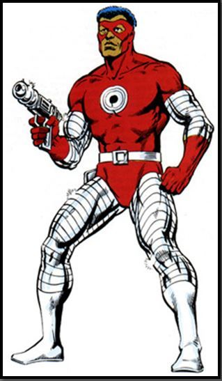

Chemistro is an antagonist in Marvel Comics. He is an enemy of Luke Cage and the Avengers, whose name was taken by three different people.Curtis Carr, the first Chemistro, created a suit and gun that could fire a ray that rearranged matter into a different form. He created the gun for his company, who wanted to mainstream it, but Curtis sought to keep it for himself. He was fired, and seeking revenge, used the alchemy gun against his former employers.
 GoBack